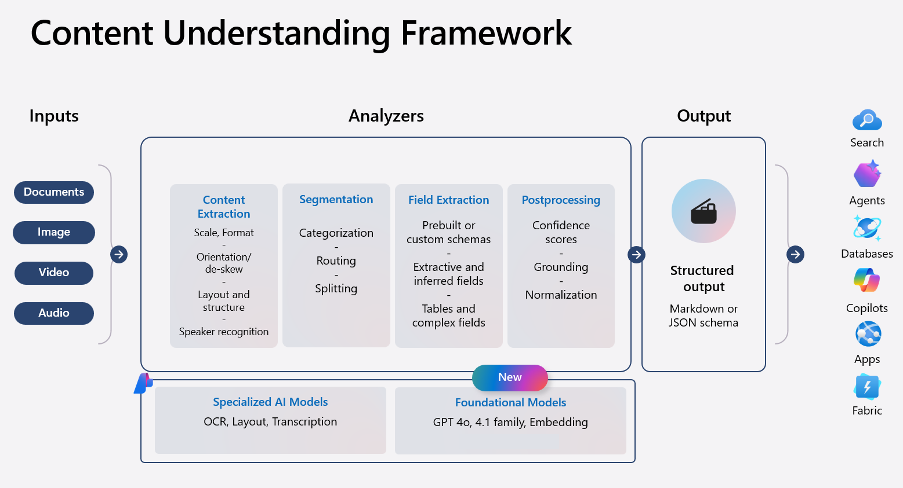
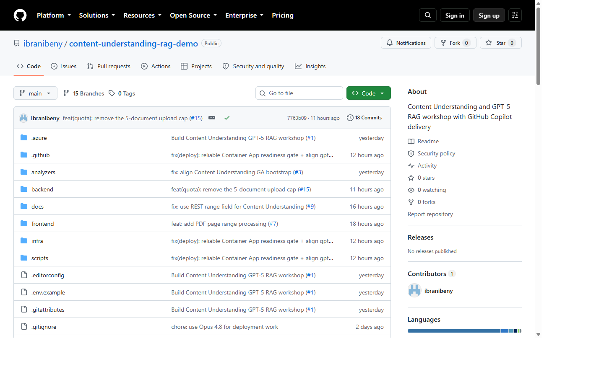
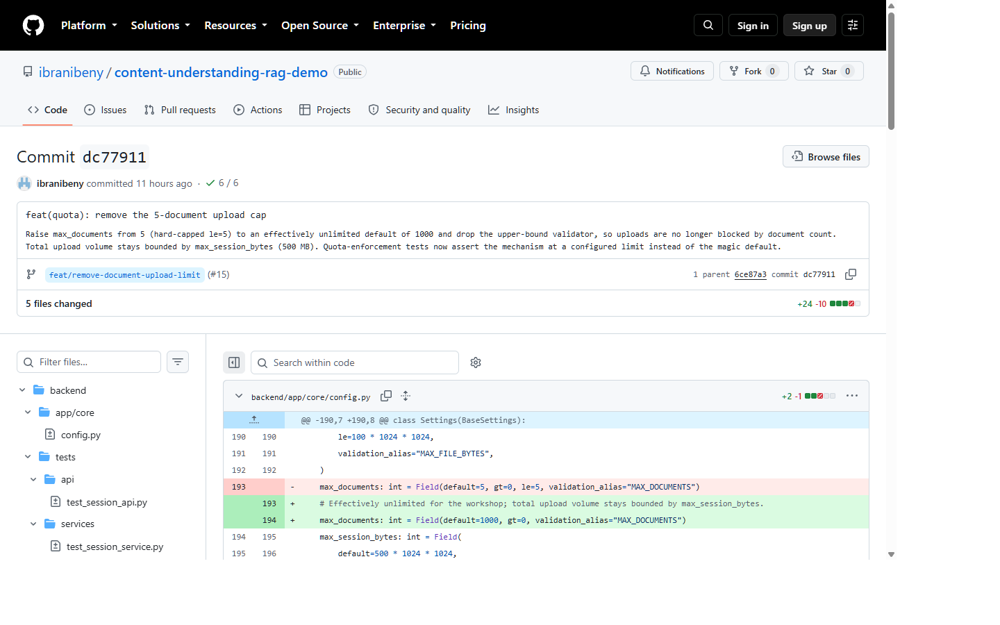
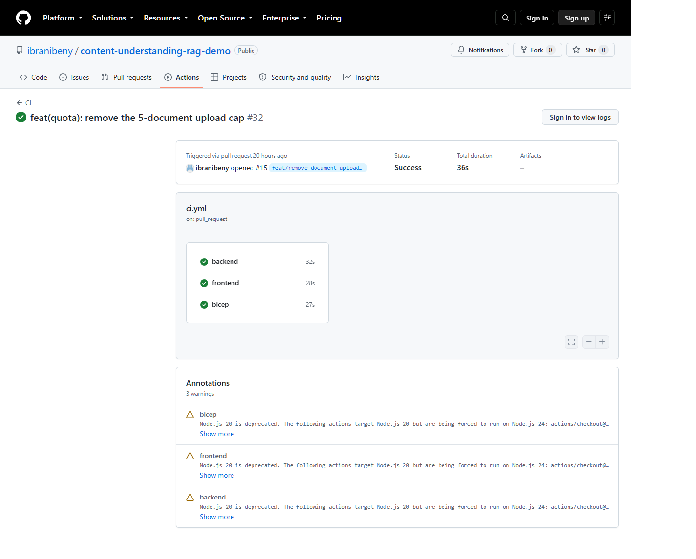
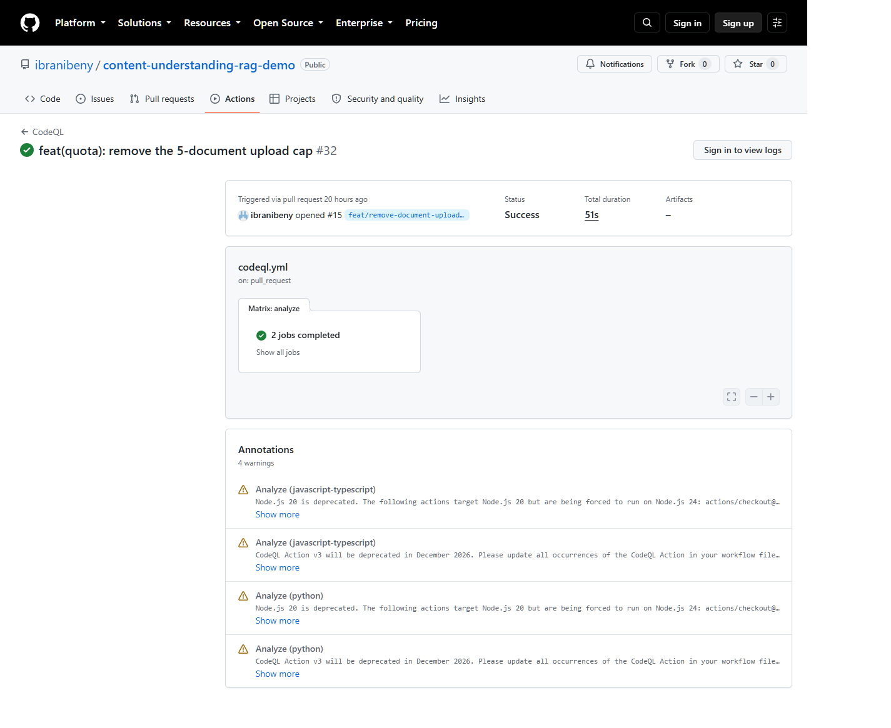
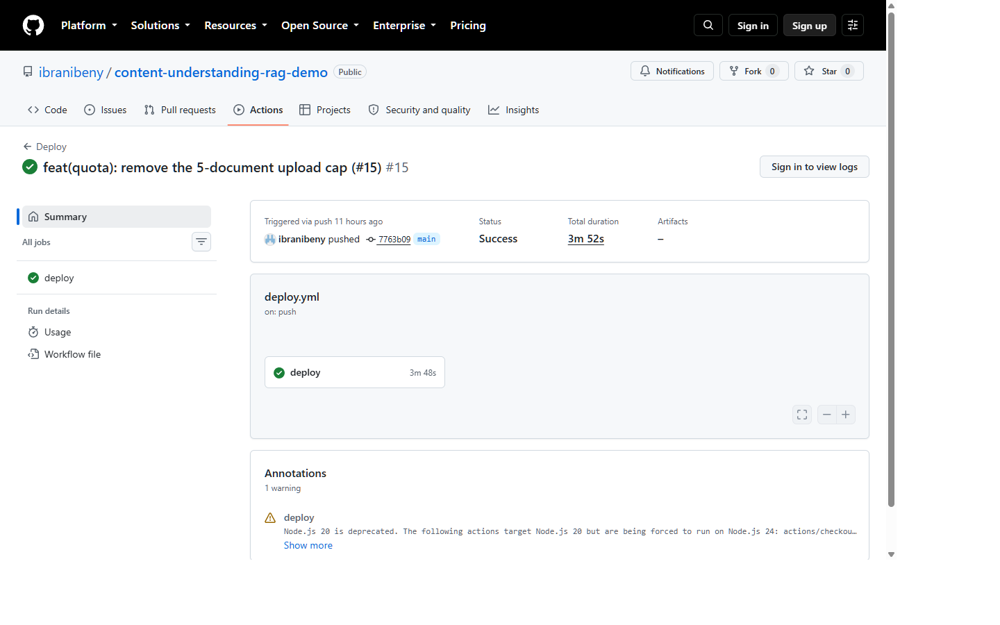
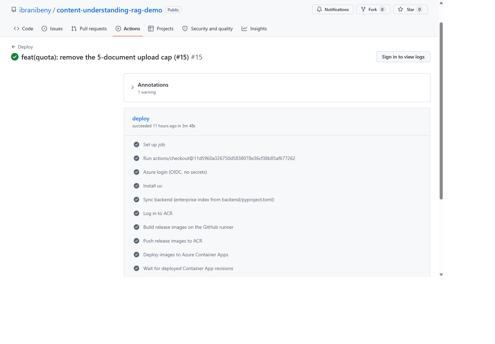
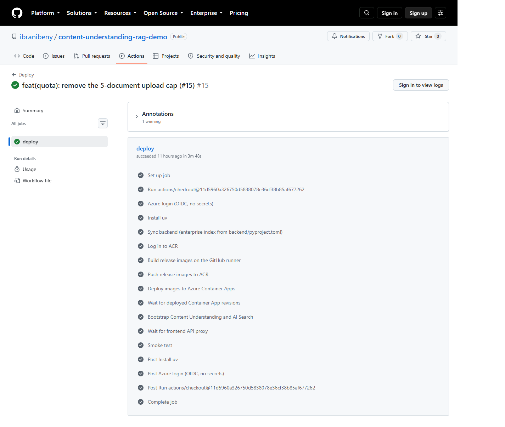
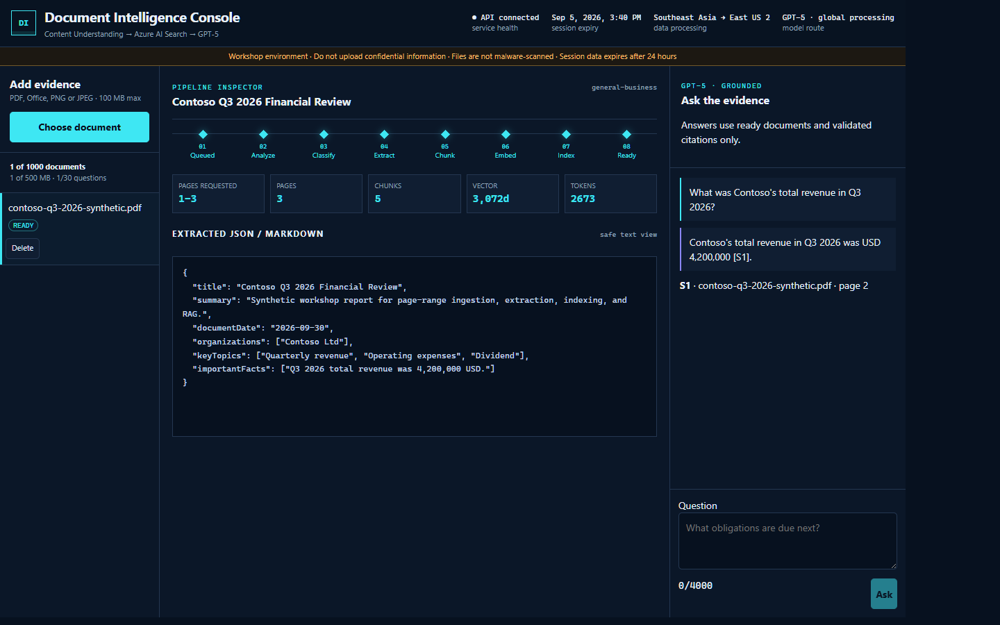

This workshop traces one document-intelligence change from a developer branch to a grounded citation in production. Participants do not stop at deploying resources; they follow the exact state transitions, identities, messages, vectors, and release evidence that make the result trustworthy.
The lab connects GitHub Actions, Azure Content Understanding, Azure AI Search, GPT‑5, managed identity, and failure recovery as one operating system. By the end, the audience can explain both the happy path and the controls that prevent retries, concurrency, or unsupported citations from corrupting evidence.
Git provides the immutable history, while GitHub turns that history into a governed collaboration workflow. Branches isolate work, commits preserve intent, pull requests expose the review surface, and protected-branch rules decide what evidence must exist before a change can become releasable.
GitHub Actions then converts repository events into executable delivery policy. In this workshop, YAML under .github/workflows validates the backend, frontend, infrastructure, and security analysis before a push to main is allowed to create a production release.
BRANCHisolate a change
COMMITrecord intent
PULL REQUESTreview + discuss
REQUIRED CHECKSCI + CodeQL
MERGErelease from main
CI · parallel
Backend
The backend job restores the approved Python environment before evaluating style, types, behavior, and workflow policy. Its sequence is uv sync, Ruff, mypy, pytest with coverage, and repository script tests.
This layered order gives failures a useful meaning. Dependency or syntax problems stop early, while later test failures indicate that executable behavior or a delivery invariant changed.
CI · parallel
Frontend
The frontend job installs the locked Node dependency graph and then runs linting, TypeScript analysis, component tests, and the production build. Each check evaluates a different risk before browser assets are accepted.
The final build matters because unit tests alone cannot prove that bundling, imports, and production optimization work together. A merge is therefore blocked if the deployable frontend artifact cannot be produced.
CI · parallel
Infrastructure
The infrastructure job compiles and lints Bicep, then runs policy tests against assumptions that syntax validation cannot express. In parallel, CodeQL analyzes the Python and JavaScript/TypeScript codebases.
This separates infrastructure correctness from application correctness while still making both mandatory evidence for the same pull request. The result is a release decision based on code, cloud topology, and security analysis together.
Evidence moves with the process. A software change becomes trustworthy only when its branch, commit, checks, merge, release, and runtime result can be connected by durable identifiers.
Module 07 reconstructs that chain with one aligned screenshot and exit criterion per checkpoint, so the audience learns how to read GitHub as an evidence system rather than a collection of separate screens.
02
AI pair programmer → agentic workflows
Copilot compresses the feedback loop—not accountability.
GitHub Copilot can move between several working modes: inline completions for local edits, Chat for explanation, agent mode for coordinated multi-file changes, and pull-request review for feedback at the collaboration boundary. The important architectural choice is to give each mode enough repository context to act consistently.
Copilot does not replace engineering ownership. Repository instructions, tests, static analysis, human review policy, and deployment evidence remain the controls that turn an AI-assisted edit into an auditable software change. Participants will therefore evaluate Copilot by the quality of verified outcomes, not by the amount of code it generates.
Prompt pattern
Context → intent → constraints
A strong engineering prompt begins by locating the relevant code and explaining the desired observable outcome. It then names boundaries such as supported APIs, security rules, files that must remain unchanged, and the evidence required for completion.
This structure helps Copilot reason inside the system rather than generate an isolated snippet. Participants will use prompts that identify source files, expected tests, deployment constraints, and failure behavior before asking for implementation.
Repository policy
Instructions are executable culture
Repository instructions make architectural and security conventions available where code changes happen. They tell both humans and agents how the project authenticates, tests, deploys, handles data, and evaluates completion.
Keeping these rules beside the code reduces drift between documentation and daily work. The workshop treats instructions as part of the delivery control plane, while CI remains the independent mechanism that verifies whether those rules were actually followed.
Verification
Evidence before assertions
Verification begins with the smallest test that can falsify the proposed change, then expands to the full test suite, static analysis, CI, deployment smoke tests, and a real browser flow. Each layer answers a different question.
The discipline is important for AI-assisted work because plausible code is not operational evidence. Participants must connect every success claim to fresh command output, a GitHub check, a deployed revision, or a runtime observation.
The plans below show how GitHub positions Copilot for individual developers and governed organizations. Price is only one dimension; model access, agent capacity, centralized policy, audit, and pooled usage determine which plan fits an engineering operating model.
Use this table as a dated workshop reference rather than a purchasing quote. GitHub can change prices, included credits, and feature availability, so facilitators should reopen the linked official plan page immediately before delivery.
Plan
Price / month
Included AI credits
Fit
Free
$0
Allowance; 2,000 completions/month
Try completions, Chat, CLI, and auto model selection.
Pro
$10
1,500 total monthly
Individual daily coding, model selection, cloud agent, code review.
Pro+
$39
7,000 total monthly
Complex development with premium models and more agent usage.
GitHub Enterprise Cloud with enterprise capabilities and audit.
Pricing and allowances can change. Paid-plan completions and next-edit suggestions remain unlimited; AI-credit overage for organizations is documented at $0.01/credit when enabled. Confirm before purchase.
For a workshop audience, the practical distinction is governance: individual plans optimize personal productivity, while Business and Enterprise add organization-level controls that determine how Copilot can be adopted safely at scale.
03
Unstructured input → structured evidence
Content Understanding turns messy files into a contract.
Azure Content Understanding treats an analyzer as a reusable processing contract. The analyzer defines which modalities enter the system, how content and structure are extracted, which categories and fields are produced, which models support generative reasoning, and how the result is grounded back to the source.
The application uses the GA 2025-11-01 API to obtain both schema-aligned JSON and layout-aware Markdown. JSON supports automation and inspection, while Markdown becomes the stable handoff to chunking, vector indexing, and retrieval-augmented generation.

Official Microsoft Learn framework: content extraction → segmentation → field extraction → postprocessing → structured output. Source: Microsoft Learn.
Input
Documents + multimodal content
Content Understanding accepts documents, images, Office files, audio, and video according to the selected analyzer and service limits. This workshop focuses on PDF documents because page ranges and source locators make the evidence path easy to inspect.
The input is more than a binary file. Its MIME type, requested range, storage URL, session ownership, and expiry all influence whether the system can process it safely and later prove where an answer originated.
Analyzer
Schema-driven extraction
The analyzer combines content extraction with classification and field-generation rules. It can preserve layout, route a document to a category-specific schema, and produce values that remain grounded in the source.
In this application, one router selects invoice, receipt, contract, or general-business extraction. That design keeps the upload contract stable while allowing each document class to expose a different structured result.
Output
JSON + Markdown
Structured JSON gives the API a predictable contract for dates, organizations, topics, actions, and important facts. It supports UI inspection and downstream automation without requiring consumers to parse model prose.
Layout-aware Markdown serves a different purpose: it preserves enough document structure for deterministic chunking and source-aware retrieval. The two outputs therefore complement each other rather than duplicate the same information.
Public provenance. The framework illustration above is sourced from Microsoft Learn and links directly to the public Content Understanding overview.
Facilitators should reopen that source before delivery to verify current terminology and service behavior, while treating the reference repository as the authority for workshop-specific implementation values.
04
Workshop scenario
Ask a financial document—and prove the answer.
The scenario begins with a synthetic financial report so every participant can inspect the complete data path without introducing customer or confidential information. The user selects a page range, uploads directly to Blob Storage, and watches the document advance through eight asynchronous stages.
The scenario ends only when a grounded answer can be traced to indexed source evidence. The user must verify the citation, inspect the structured extraction, and delete the document so the workshop demonstrates lifecycle controls as well as model output.
Participant task
The participant acts as both application user and production engineer. They begin with a synthetic PDF, choose a page range, and observe how a direct upload becomes an asynchronous document record rather than an immediate model response.
After the document reaches Ready, the participant asks a question, inspects the cited evidence, and then deletes the document. The ordered tasks below turn that narrative into a repeatable lab sequence.
Delete the document and confirm quota is released.
Definition of done
Completion means that the participant can connect a user-visible result to the internal evidence chain. A green status alone is insufficient unless page scope, extracted structure, vector metadata, and citation behavior also match the scenario.
The checklist also protects the delivery boundary. It requires secretless authentication, immutable release tags, and an end-to-end smoke test so the audience leaves with an operational definition of trust.
Document reaches Ready with page/chunk/token metrics.
Extracted JSON matches the analyzer schema.
Answer includes only validated citation IDs.
No account keys, API keys, or client secrets.
Deployment uses immutable commit SHA image tags.
Smoke test creates, queries, cites, and deletes synthetic evidence.
Workshop narrative. Participants first ship a controlled code change through GitHub and only then interact with the production application. This order keeps software-delivery evidence separate from model-output evidence.
The frontend capture therefore appears at the post-deployment checkpoint in Module 07. It demonstrates the consequence of the release after the commit, checks, merge, revision, and smoke-test gates have already been explained.
05
Implementation deep dive
Follow every byte, token, lease, and ETag.
The L400 module moves from product behavior into source-level contracts. Participants trace how one uploaded byte range becomes a document record, a queue message, normalized Markdown, overlapping chunks, vectors, indexed evidence, and finally a validated citation.
The purpose is to reason about invariants when the system is under pressure. Every block maps to the reference repository and asks the audience to connect implementation choices with retries, concurrency, identity boundaries, telemetry, and safe recovery.
Suggested 4-hour delivery plan
The agenda deliberately alternates explanation with inspection. Each segment introduces a contract, locates the corresponding source code, and then asks participants to prove the behavior through a test, GitHub run, Azure query, or browser observation.
The timing reserves the final portion for failure injection because reliability is easier to understand after the normal evidence path is clear. Facilitators can shorten the workshop by demonstrating failure cases, but the order should remain unchanged so later exercises build on earlier invariants.
Module
Time
Hands-on outcome
GitHub control plane
30 min
Trace branch rules, CI fan-out, CodeQL, OIDC claims, environment variables, and immutable SHA tags.
POST /api/uploads/init atomically reserves document count and bytes, validates a PDF range, creates the document row, and returns a create/write-only user-delegation SAS. The browser uploads directly to Blob, then calls POST /api/uploads/{id}/complete.
The split keeps large file bytes away from the API process without surrendering authorization. The API controls destination, size, range, lifetime, and session ownership, while Blob Storage handles transfer scale and the complete call proves that the expected artifact exists before ingestion begins.
SAS lifetime: 15 minutes; clock-skew allowance: 5 minutes.
PDF range: 1-based, maximum 300 unique pages; REST wire field: range.
No storage account key or connection string crosses the app boundary.
2 · Session boundary
Opaque cookie, hashed server key
The API generates 32 random bytes, returns a 43-character base64url token in an HTTP-only cookie, and stores only SHA-256(raw token) as the 64-hex partition key. Sessions expire after 24 hours.
This creates a lightweight isolation boundary for a workshop without storing the bearer-like raw token in the data plane. Participants should trace how the same derived session key scopes Table partitions, document visibility, Search filters, quotas, and chat eligibility.
Quota reservation and document creation share one Azure Table transaction.
Deleted documents release count and byte quota once at DELETING.
Document count defaults to 1,000; total bytes remain the practical bound.
Security cookie invariants are code-owned, not client-controlled.
State invariant. A document is visible only while it remains outside DELETING and DELETED. A worker may mutate it only when the queue identity matches, the document is not expired, the Blob lease remains valid, and the ETag transition succeeds.
These conditions form one composite fence. Participants should test them together because a valid queue message does not override a newer delete decision, and a valid lease does not authorize a stale repository write.
UPLOADawaiting_upload
QUEUEqueued
UNDERSTANDanalyzing → classified → extracted
INDEXchunking → embedding → indexing
SERVEready | failed | deleting
3 · Concurrency
Lease + ETag fencing
The document control Blob uses a 60-second lease renewed every 30 seconds. Repository writes use If-Match ETags. Lease loss or a stale ETag stops a worker from overwriting delete or retry transitions.
The two mechanisms protect different boundaries: the lease establishes temporary processing ownership, while the ETag detects a newer persisted decision. Participants should observe that neither mechanism alone is enough to prevent a slow worker from resurrecting deleted evidence.
4 · Delivery
Queue + durable outbox
Upload completion commits QUEUED state and an ingestion outbox record atomically. The dispatcher scans up to 100 unsent records every 5 seconds. Queue visibility is 120 seconds and renews every 60 seconds; this is independent of the 60/30-second Blob lease contract.
The outbox closes the gap between durable state and message delivery. If dispatch fails after the transaction commits, the record remains discoverable and can be sent later instead of leaving a document permanently queued without work.
5 · Recovery
Bounded retry + poison
Retryable 408/429/5xx, timeouts, lease loss, and transient artifacts use exponential backoff with jitter. After five dequeue attempts, a sanitized envelope goes to the poison queue.
Classification determines whether recovery is safe, so the workshop inspects failure code, retryability, attempt count, and retained operation identifiers. Poison handling is the final diagnostic boundary: it preserves enough metadata to investigate without retaining document content, prompts, or SAS values.
6 · Content Understanding REST
Long-running operation, resumable result
The Analyze request submits a short-lived Blob URL and optional page range, then returns an operation location rather than a completed document. The worker persists both the operation URL and result ID so processing survives queue redelivery.
POST /contentunderstanding/analyzers/{router}:analyze
?api-version=2025-11-01
{
"inputs": [{ "url": "<short-lived SAS>", "range": "1-3" }]
}
→ Operation-Location
→ GET operation until Succeeded
→ normalize category, markdown, fields, locators, pages, tokens
Polling delays are 1, 2, 4, 8, 15, 30, 30, and 30 seconds. When the local window closes, a retry resumes the stored operation instead of submitting duplicate generative work, which is the behavior participants should confirm in telemetry.
7 · Analyzer routing
One router, four extraction contracts
business_document_router is the stable entry contract for every upload. It classifies the document, selects one specialized analyzer, and returns the matching extraction schema without asking the application to predict the document type first.
invoice → workshop_invoice
receipt → workshop_receipt
contract → workshop_contract
general-business → workshop_general_business
This indirection lets the application keep one API path while each document family evolves independently. The normalization boundary converts absent typed values to null so optional data remains usable, but rejects malformed or unknown field types so schema drift cannot silently contaminate chunks, search results, or grounded answers.
8 · RAG data plane contract
The RAG path is a chain of explicit contracts rather than one model call. Deterministic chunking preserves context and locators, embeddings establish the vector shape, Search enforces session-scoped retrieval, and generation receives only the evidence selected by the server.
The failure column turns each contract into an exercise. Participants deliberately violate size, batch, filtering, and citation assumptions to see whether the system retries, fails closed, or returns the fixed insufficient-evidence response.
Stage
Implementation contract
Failure to test
Chunk
cl100k_base; max 800 tokens; 120-token overlap; heading hierarchy and page/source locators; deterministic SHA-256 chunk ID.
Long paragraph splits sentence-first, then token windows.
Embed
text-embedding-3-large; 3,072 dimensions; max 64 inputs; max 8,192 tokens per input/request; five transient attempts.
Cross-session document IDs produce no eligible evidence.
Generate
GPT‑5 stream, max 1,200 output tokens; evidence labeled S1–S8; only retrieved IDs are valid citations.
Unknown citation is rejected; no evidence returns a fixed fallback.
9 · Identity and RBAC
Separate runtime, pull, and deployment identities
The current MVP attaches a shared id-app runtime identity to the frontend, API, worker, and cleanup workloads, and grants it the union of required Storage, Search, OpenAI, and Content Understanding data-plane roles. A distinct id-acrpull identity exists only to pull images from ACR.
Delivery and model invocation remain separate trust paths. GitHub uses a federated deployment principal with no client secret, while the Foundry account identity invokes attached model deployments. Participants should understand that a stricter production design could split the shared runtime identity per workload, even though this workshop intentionally uses the simpler MVP topology.
Shared app identity: Blob/Queue/Table Data Contributor, Search Index Data Contributor, Cognitive Services OpenAI User, Content Understanding Owner.
ACR pull identity: only pulls immutable images.
GitHub OIDC principal: short-lived federation for release and bootstrap; no client secret.
Foundry identity: invokes attached model deployments.
10 · Data lifecycle
Tombstone first, erase under lease
DELETE immediately transitions the record to DELETING and hides it. The cleanup job acquires the same document lease, removes Blob artifacts and Search chunks, marks DELETED, then hard-purges the Table row after 48 hours.
Run cleanup manually to prove idempotency and verify that a concurrent worker cannot recreate deleted evidence.
Failure-injection matrix
Failure injection turns architecture claims into observable behavior. The facilitator introduces one controlled fault at a time and asks participants to predict the document state, retry decision, queue behavior, and telemetry before examining the result.
The evidence column is as important as the expected classification. A successful exercise demonstrates not only that the system recovered or failed safely, but also that operators can explain the decision without exposing sensitive content.
Inject
Expected classification
Evidence to collect
Content Understanding 429/503
retryable dependency unavailable
dequeue count, retry delay, same operation/result ID
Polling window expires
retryable content_understanding_poll_timeout
document remains ANALYZING; message deferred
Blob lease lost
retryable dependency_unavailable
no later write with a stale lease
Azure Table ETag conflict
bounded conflict retry or safe stop
winning state preserved; no resurrection
Embedding input > 8,192 tokens
non-retryable embedding_input_too_large
FAILED; no content in telemetry
Fifth failed delivery
poison envelope
document/correlation/code/attempts only
Observability rule. Application Insights records the service role, release SHA, dependency status and duration, correlation ID, safe failure code, retryability, and exception type. These fields let an operator reconstruct what the system decided.
Redaction removes authorization, cookies, SAS query strings, prompts, extraction payloads, document content, and URL fragments before export. The workshop therefore teaches observability as a controlled metadata contract rather than unrestricted logging.
06
Architecture · editable source included
Separate the release path from the evidence path.
The architecture separates the mechanism that changes software from the mechanism that processes evidence. This distinction lets the audience reason independently about release authorization, runtime identity, document state, and grounded-answer integrity.
The diagram uses a rose delivery lane for branch, pull request, required checks, OIDC, image publication, and Container Apps revision. The blue runtime lane follows upload, asynchronous analysis, chunking, embedding, indexing, retrieval, generation, and citation validation.
Read left to right, then follow the numbered runtime flow
Begin with the top lane, where GitHub brand marks identify the six controls that decide whether a change may exist. A reviewed commit passes the pull request, CI checks, and CodeQL analysis before protected main accepts it; the deploy workflow then exchanges an OIDC token for Azure access, and the lane hands over to Azure icons at Container Registry and Container Apps, where the change becomes running infrastructure. This entire lane changes executable software and never carries document content.
Then work through the ten numbered steps in the runtime lane, because the numbers encode the order in which evidence is created rather than the order in which the boxes appear. Steps 1 to 3 establish the session and authorize an upload, step 4 shows the browser writing bytes straight to Blob Storage, and step 5 hands the work to the asynchronous worker under a Blob lease.
Steps 6 and 7 convert that document into durable evidence: Foundry analyzes the selected pages and embeds the resulting chunks, then the worker upserts 3,072-dimensional vectors into Azure AI Search. Steps 8 and 9 form the answering loop, where the API embeds the question, retrieves the top eight session-filtered chunks, and calls GPT-5 with that evidence. Step 10 and the dashed telemetry line close the lifecycle by sweeping deleted artifacts and emitting sanitized operational records.
Point out that the icon families are a deliberate teaching device rather than decoration. The single Foundry card is equally intentional: Content Understanding, text-embedding-3-large, and GPT-5 form one governed AI boundary in East US 2, so both the worker and the API cross the same regional line whenever document content is processed.
Southeast Asia
Application and data plane
Southeast Asia contains the user-facing frontend, FastAPI service, scale-to-zero worker, cleanup job, Storage account, Azure AI Search, Container Registry, and Application Insights. It owns session state, uploaded artifacts, queue delivery, indexed chunks, and operational telemetry.
This concentration makes the application boundary easy to inspect during the workshop. Participants can correlate a browser action with Blob, Queue, Table, Search, revision, and trace records while keeping runtime authorization on managed identities.
East US 2
AI processing plane
East US 2 hosts Microsoft Foundry, Azure Content Understanding, GPT‑5, and text-embedding-3-large. The worker invokes this plane for document understanding and chunk embeddings, while the API invokes it for question embeddings and grounded generation.
The regional split is an explicit data-governance decision rather than an implementation detail. Facilitators must explain that selected document content and evidence cross regions for AI processing and confirm that the workshop environment is approved for that flow.
07
Step-by-step deployment
Bootstrap once. Release only from GitHub.
The one-time helper provisions validated Bicep and may use ACR Tasks for initial non-release bootstrap or troubleshooting. Every subsequent production release is built only on GitHub-hosted runners—not laptops or ACR Tasks—and Azure login uses OIDC.
The guidance below follows one completed change as a continuous story. Each checkpoint explains the action to perform, why it matters to the delivery system, how to interpret the aligned screenshot, and which evidence must exist before moving to the next checkpoint.
Safety boundary. Use only synthetic, non-confidential documents because selected content and evidence move from Southeast Asia to East US 2 for AI processing. Uploads are not malware-scanned, so do not submit untrusted files; confirm regional approval before provisioning or uploading data.
The local bootstrap operator also needs permission to deploy resource-group resources and assign roles. Do not work around missing authorization with account keys, connection strings, client secrets, or copied production data.
Preparation · before the Git evidence trail
Provision the platform and connect GitHub once
This preparation is completed by the facilitator before participants start the branch-to-production sequence. The local helper may use ACR Tasks only for first-time, non-release bootstrap; normal software releases must follow the protected GitHub path so every production image is traceable to a reviewed merge commit.
OIDC must be provisioned with the immutable GitHub owner and repository numeric IDs as well as their names. Query all four values from the target repository's REST metadata, save them in the selected azd environment, and only then run Bicep so it can create the deployment identity and its environment-scoped federated credential.
az login
gh auth status
$repo = "<owner/repository>"
$repoMetadata = gh api "repos/$repo" | ConvertFrom-Json
$ownerId = [string]$repoMetadata.owner.id
$repositoryId = [string]$repoMetadata.id
azd env select cudemo 2>$null
if ($LASTEXITCODE -ne 0) {
azd env new cudemo --no-prompt
}
azd env set AZURE_GITHUB_OWNER $repoMetadata.owner.login
azd env set AZURE_GITHUB_OWNER_ID $ownerId
azd env set AZURE_GITHUB_REPOSITORY $repoMetadata.name
azd env set AZURE_GITHUB_REPOSITORY_ID $repositoryId
The first block obtains the repository identity that becomes part of the OIDC subject. After provisioning, GITHUB_IDENTITY_CLIENT_ID is a Bicep output rather than an input; the configuration script publishes it and the remaining non-secret deployment outputs into the GitHub production environment.
Retain the subscription and tenant IDs, repository names and IDs, deployment client ID, resource group, four workload names, frontend URL, API URL, and release SHA. Display the Azure outputs with azd env get-values; later checkpoints use those exact values to verify image provenance, start cleanup, open the frontend, and correlate telemetry.
Preparation exit criterion: Bicep deployment succeeds; GITHUB_IDENTITY_CLIENT_ID is non-empty; GitHub shows a protected main branch, a production environment, OIDC variables, and required CI/CodeQL checks. No client secret is created.
One retrospective evidence thread. Checkpoints 01–08 reconstruct completed PR #15 from durable GitHub records: current repository state, feature commit dc77911, archived pull request, CI and CodeQL runs, squash merge 7763b09, deployment run 33872688415, runtime verification, and cleanup guidance.
The screenshots are post-completion evidence aligned to each action. They show how an operator audits a finished delivery chain; they do not claim that every screen was captured live before merge.
Establish the source of truth
Action. Clone the public repository, inspect main, and identify the deployment contract in .github/workflows, infra/main.bicep, and docs/deployment.md.
Why it matters. A participant cannot evaluate a later diff without first knowing which branch and commit define the baseline. Locating the workflow, infrastructure, and application boundaries also prevents the exercise from treating deployment as a disconnected command.
git clone https://github.com/ibranibeny/content-understanding-rag-demo.git
cd content-understanding-rag-demo
git switch main
git pull --ff-only

Retrospective evidence. This post-merge repository view establishes public provenance and the current main source of truth. Use the file tree to locate application, analyzer, infrastructure, workflow, script, and test boundaries; use local Git history—not this screenshot—as the pre-change baseline.
Exit criterion. Local HEAD equals origin/main; no uncommitted changes; participant can locate CI, Deploy, Bicep, analyzer, backend, and frontend entry points.
Create one atomic branch and commit
Action. Create a focused branch, make one bounded change, run targeted/full verification, and commit the evidence-bearing unit.
Why it matters. The commit is the smallest immutable unit that later checks, reviews, images, revisions, and traces can reference. Keeping one behavior in one commit makes failures attributable and rollback understandable.
git switch -c feat/my-change
# edit, then run the relevant tests
git status --short
git diff --check
git add <changed-files>
git commit -m "feat(scope): describe the behavior"

Retrospective evidence. GitHub can display this view only after the local commit is pushed. Commit dc77911 preserves the atomic subject, feature branch, changed files, patch, and checks for the branch-and-commit action above.
Exit criterion. Commit explains one behavior, contains no generated secrets/binaries, passes local checks, and can be reverted independently.
Open a pull request with test evidence
Action. Push the branch and open a PR that records the problem, architecture impact, security boundary, test commands, expected runtime behavior, and rollback path.
Why it matters. A pull request changes private implementation work into a shared engineering decision. Its description gives reviewers the context needed to compare the code against acceptance criteria instead of inferring intent from the patch.
Retrospective evidence. This is the archived final state of PR #15 after merge. It preserves the source/target branches, rationale, test evidence, commits, and changed-file review surface created during the pull-request action.
Exit criterion. PR is reviewable without private context; every acceptance criterion maps to code/tests; the diff contains only intended files.
Pass required CI, security, and IaC gates
Action. Inspect—not merely wait for—the backend, frontend, Bicep, policy-test, Python analysis, JavaScript/TypeScript analysis, and CodeQL results. Treat a red check as evidence, not noise.
Why it matters. Parallel jobs divide risk into independently interpretable signals. A green application test cannot compensate for invalid infrastructure, and a successful build cannot compensate for a security-analysis failure, so the merge decision depends on the complete set.
gh pr checks <pr-number> --watch
gh run view <run-id> --log-failed

CI evidence. The real pull-request run is green and visibly lists backend, frontend, and Bicep jobs. Open a job or the workflow file to inspect its individual commands; the screenshot proves job-level completion, not every hidden log line.

CodeQL evidence. The companion pull-request run is green and reports two completed analysis jobs; the run navigation identifies Python and JavaScript/TypeScript analysis.
Exit criterion. The CI and CodeQL run pages identify feature commit dc77911 and report Success. Separately confirm in repository rules that these workflow checks are required before merge; the screenshots prove run results, not ruleset configuration or bypass history.
Merge the reviewed change into protected main
Action. Squash-merge after required checks and any human approval required by the repository's current policy. PR #15 had no review approval requirement, so its durable evidence is the successful checks and merge record. Record the resulting main-branch SHA because that SHA becomes the immutable image tag and release correlation key.
Why it matters. Merging is a promotion decision, not merely branch housekeeping. The resulting SHA binds the reviewed source to the build input and gives operators one identifier to follow through GitHub Actions, ACR, Container Apps, and Application Insights.
What to read. Verified merge commit 7763b09 is now on main. This establishes the exact source revision allowed to enter the production workflow.
Exit criterion. PR state is merged, merge commit is reachable from origin/main, and the release workflow was triggered by that push—not by a developer laptop.
Release the merge SHA with GitHub Actions OIDC
Action. Follow deployment run 33872688415. The runner exchanges its GitHub OIDC token for Azure access, builds backend/frontend images tagged with GITHUB_SHA, pushes ACR, updates Container Apps, gates revisions, bootstraps Content Understanding/Search, verifies the proxy, and completes the workflow's Smoke test step.
Why it matters. OIDC removes the need for a stored Azure client secret, while the merge SHA preserves artifact provenance. The revision, bootstrap, proxy, and smoke gates ensure that publishing an image is not confused with proving that the deployed system can serve its documented contract.
gh run list --workflow Deploy --branch main
gh run watch <deploy-run-id> --exit-status

Trigger evidence. The run summary visibly ties this release to a push of commit 7763b09 on main and reports Success. This is the evidence that the deploy was merge-triggered.

Deployment step evidence. The visible step names show OIDC login, ACR authentication, GitHub-runner image build, image push, and Container Apps update. Confirm the actual image SHA with Azure CLI.

Release-gate evidence. The lower steps visibly show the revision wait, Content Understanding/Search bootstrap, frontend proxy readiness, and Smoke test all completed successfully.
# Verify the deployed image tag matches the merge SHA
az containerapp show -g <resource-group> -n <app-name> `
--query "properties.template.containers[0].image" -o tsv
Exit criterion. Workflow conclusion is success; the Azure CLI result ends with the merge SHA; revision provisioning is healthy; Bootstrap, proxy readiness, and Smoke test steps are green.
Verify the deployed application sequentially
Action. Only after the deployment is green, open the production frontend. Upload the synthetic Contoso PDF, select the page range, and correlate the UI state machine with backend telemetry: Queued → Analyze → Classify → Extract → Chunk → Embed → Index → Ready.
Why it matters. Workflow success proves the automated release contract, but the browser proves the audience-facing outcome. Correlating UI states with telemetry teaches participants how asynchronous progress, evidence metrics, grounded answers, and citations should appear to both users and operators.
Complete the proof. Generate workshop-contoso.pdf from the repository's public smoke-test fixture, upload it, and select only page 2. After Ready, inspect the extracted JSON plus page, chunk, vector, and token metrics; ask “What unique marker is printed on page 2?”, expect ORBIT-BRAVO-2, and open S1 to confirm that it points to page 2 and contains that marker. Delete the document, refresh the session, and confirm that document count and reserved bytes decrease exactly once.
uv --project backend run python scripts/smoke_test.py `
--api-base <frontend-url> `
--frontend-origin <frontend-url>
# Create the deterministic three-page file used by the browser proof.
uv --project backend run python -c "from pathlib import Path; from scripts.smoke_test import SAMPLE_LINES, make_sample_pdf; Path('workshop-contoso.pdf').write_bytes(make_sample_pdf(SAMPLE_LINES, 3))"
# In the browser: upload workshop-contoso.pdf, select page 2,
# ask the marker question, validate S1, then delete and refresh.

Full-application runtime evidence. This full application capture shows header disclosures, upload control, synthetic document list, all eight Ready states, range 1–3, 3 pages, 5 chunks, 3,072-dimensional vectors, 2,673 tokens, safe extraction JSON, grounded answer, and citation S1.
Exit criterion. Synthetic document reaches Ready; expected page range is honored; extracted JSON is present; vector dimension is 3,072; a grounded question returns only validated citation IDs; delete hides the document and releases quota.
Operate, clean up, and retain evidence
Action. Record the merge SHA, deployment run URL, smoke-test correlation ID, and Application Insights trace. Run cleanup to verify tombstone/lease behavior. Remove the environment only after the workshop retention decision.
Why it matters. The system is not complete when the demo answer appears. Operators must be able to explain which release produced it, remove expired evidence without races, and retain diagnostic metadata without retaining the document content or credentials used to process it.
az containerapp job start `
--name <cleanup-job> `
--resource-group <resource-group>
azd env select cudemo
azd down --purge --force
Exit criterion. Cleanup execution succeeds; deleted/expired documents are absent from Blob and Search; retained evidence contains no cookie, bearer token, SAS query, prompt, or document payload.
↗
Primary sources
Grounded in public documentation and executable code.
The workshop uses two kinds of authority. Microsoft Learn and GitHub documentation establish product contracts, supported behavior, and current pricing, while the reference repository shows the exact implementation used by the exercises.
Both sources are time-sensitive in different ways. Product documentation can change as services evolve, and implementation details can change with commits, so facilitators should reopen the links and pin the repository SHA before each delivery.
Microsoft Learn
Use Microsoft Learn to explain the supported service model before examining workshop-specific code. These references cover GitHub workflow concepts, Container Apps delivery, and the Content Understanding framework and document capabilities.
When the code and product documentation appear to disagree, confirm the API version and publication date before teaching the behavior. The workshop intentionally uses the GA Content Understanding contract rather than preview-only capabilities.
Use GitHub documentation for Copilot plans and the repository itself for executable truth. The source tree, workflow YAML, Bicep, tests, commits, pull requests, and Actions runs provide the evidence used throughout the sequential deployment guidance.
The architecture assets are also reproducible. The page embeds a public SVG for easy viewing and provides the editable Draw.io source so an audience can inspect or adapt the topology instead of treating the diagram as a static illustration.
{kind=link}
{kind=link}